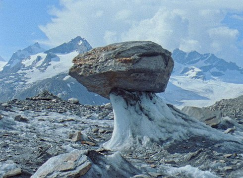

Résistance

Laurence Favre
|
11 min – 16mm – no dialogue B+K+S+P+V: Laurence Favre – T: Philippe Ciompi
|
Tuesday 16 oct 8.30 pm werkstattkino
Seeming as though they’ve been there for ever, marked by the two moraines along the snowslide, the glacier is enormous. Looking majestic, timeless in a monochrome landscape, it is imposing, but turns out to be vulnerable too. The objects it spits out: empty tins, the skeletal remains of an airplane, are the manifestation of man’s fleeting passage, and bear witness to its continued and irreversible thawing. Yet it still resists. (Locarno 2017)
Laurence Favre ’s work concerns issues around identity, how collective memory is constructed, and the relationship between individuals and their environment. She is a member of the self-managed film collective LaborBerlin.
|
| Films Health bus at the red light district 2008 – Nwa-Mankamana 2013 – Résistance 2017
|